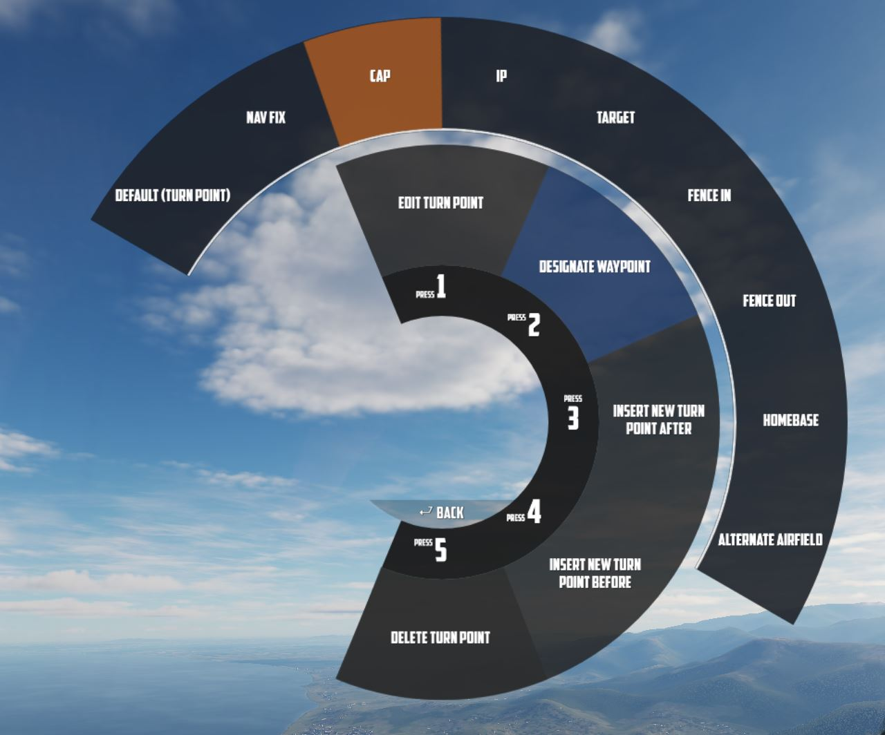
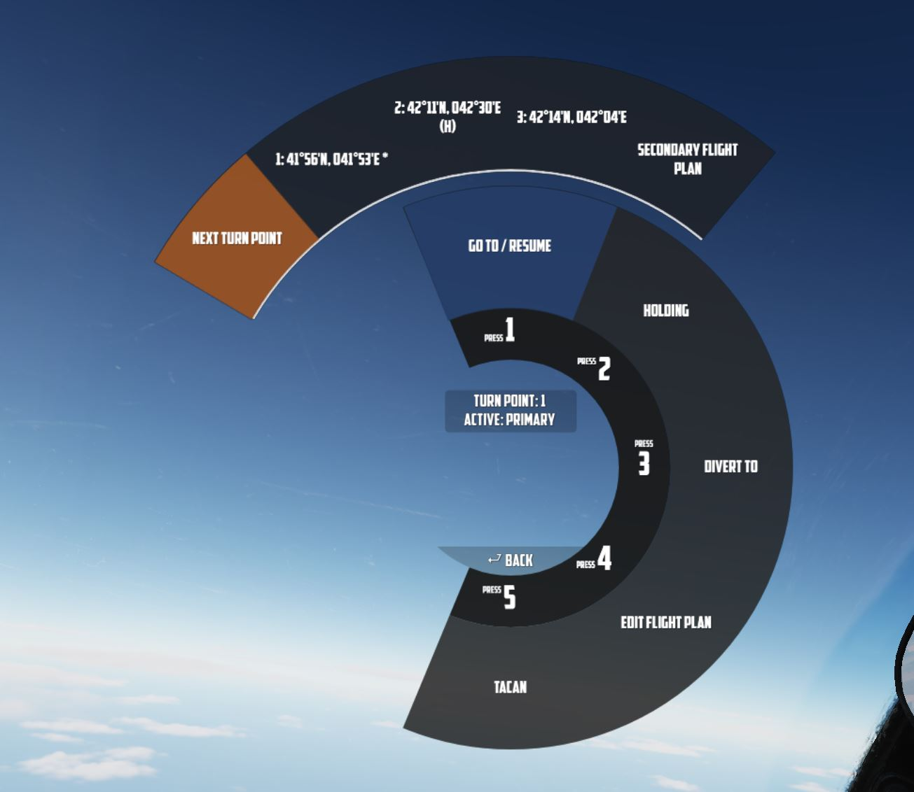
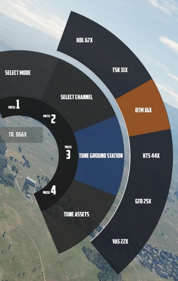

Navigation

Navigation with Jester revolves around managing turn points for two flight plans: the Primary Flight Plan and the Secondary Flight Plan. Both can be edited and followed by Jester in the same manner, although Primary Flight Plan is considered the main one and the Secondary Flight Plan serves as a backup.
Flight Plan
A flight plan consists of waypoints. They can be inserted, deleted or edited by the player through the UI, map or mission editor.

If the mission has assigned the aircraft a series of waypoints through the mission editor, this will be available by default as the Primary Flight Plan.
Each waypoint in the flight plan can be designated as one of several special types. These designations will influence Jesters actions and the dialog phrases he uses as one approach the waypoint. The types are:
- Turn Point (default): This is the standard waypoint type. Jester will automatically switch to the next waypoint when the aircraft is within 2 nautical miles (NM) of the turn point, as indicated by his BDHI.
- Nav Fix (VIP - Visual Identification Point): Jester will perform an INS (Inertial Navigation System) position update when flying over this point. He will report the distance to the VIP 10NM and 5NM in advance. Before reaching the VIP, Jester will input the necessary coordinates into the Navigation Computer, set the Navigation Computer Position Update Switch to FIX, and then execute the update when flying over the visual reference point. It is important to note that the pilot must fly over the visual reference, not the INS-indicated point. Jester will adjust the INS coordinates at the VIP, and the success of the fix depends on how accurately the visual flyby matches the reference point. Afterward, Jester will report whether the update was successful or if the aircraft was too far from the point (in which case the flyby must be repeated). Upon a successful fix, Jester will switch to the next waypoint.
- Initial Point (IP): Jester will report the distance to the IP (15NM, 10NM, 5NM, and 2NM in advance) and provide a reminder when the aircraft is within 2NM. Once past the IP, he will switch to the next waypoint.
- Target (TGT): Similar to the IP, but with different phrases, suited target area. Jester will update the pilot as the aircraft approaches the point (10NM, 5NM, and 2NM in advance), and switch to the next waypoint once past the target.
- Fence In (F-IN) and Fence Out (F-OUT): These waypoints function similarly to the IP and Target types, but with additional tasks.
- Homebase (HB) and Alternate (ALT): These are designated landing points. Jester will not automatically switch to the next waypoint at these points, and he will report as the aircraft approaches the Homebase.
- Combat Air Patrol (CAP): The first waypoint designated as CAP will be saved as CAP1, and the second will be saved as CAP2, regardless of their positions in the flight plan. Jester will ask how long the pilot intends to remain on station at CAP1. He will then cycle between CAP1 and CAP2 until the designated CAP time expires, after which he will switch to the next waypoint following CAP2 in the flight plan. There can be several CAP1-CAP2 pairs.
🚧 For Fence In and Fence Out, Jester will later also guide the pilot through specific checklists.
Map Marker
Using the F10 map view in DCS, players can create named markers on the map simply by double clicking the desired position after selecting Mark Label at the top row in the UI.

Through the UI, these map markers can then be imported as turn points to the flight plan.

Tune Asset
The UI offers a list of nearby assets, such as ships, tankers or ground stations.
Their current position can be imported as turn point directly.
💡 For moving assets like tankers, their actual position might vary from the planned coordinates. Use TACAN or ADF for more precise navigation.
Tune Airfield
Similar to tuning for assets, the UI provides a list of nearby airfields to navigate to.

Enter Coordinates
One way to add a turn point is by entering the corresponding LAT/LON through the UI.
The format is H DD MM H DDD MM,
- where
Hrepresents the hemisphere (NorSfor latitude andEorWfor longitude); Dsignifies Degrees (00to89for latitude and000to179for longitude);- and
Mstands for Minutes (00to59).
A valid example could be N 45 32 E 047 12 or S 05 55 W 105 00.
💡 Spaces are optional,
N4532E04712is also valid.

Operation
Jester navigates by utilizing a technique called leapfrogging. The aircraft only provides a single slot to memorize a waypoint (called TGT 2).
Planned Route
When leapfrogging, TGT 2 always indicates the next turn point of the current active flight plan. As the aircraft approaches this turn point (±2 nautical miles), Jester will automatically update TGT 2 to the next turn point in the sequence.
This enables the pilot to follow the entire route of the flight plan by selecting NAV COMP on the Navigation Function Selector Panel and following the corresponding indication on the HSI.

Divert
Besides following the flight plan, Jester is capable of diverting to a different unplanned turn point using TGT 1.
Through the UI, players can switch between the diversion (TGT1) and flight plan (TGT2) at any time.

Pause & Resume Route
An active flight plan is indicated by the UI using an asterisk * next to the
current turn point.
Automatic turn point switching can be temporarily disabled per turn point using
the Holding option. Turn points designated for holding are marked with a
h.


When a flight plan has been paused, for example, because the pilot diverted to a different point (using TGT 1), it can be reactivated through the UI again by using the Go To/Resume option.
This also offers the possibility to skip turn points by jumping directly to any turn point in its sequence, as well as returning to previous points or resuming from a point designated for holding.
TACAN
The TACAN equipment can be operated by both crew members independently and then swapped between Pilot and WSO by using the Command Button on the panel.
Further, Jester is able to tune directly to any TACAN capable asset or ground station.

This also allows the pilot to set up Jesters TACAN panel with a secondary setup to then switch between both with a single click on the Command Button.
UHF
The UHF radio is duplicated between both crew members and can be operated independently. Using the Command Button allows the pilot to swap control between their and Jesters setup. This enables the pilot to setup two configurations and then swap between them fast with a single button press.
Jester is able to tune the radio directly to any nearby asset or ATC to enable and open a communication channel conveniently and quick. Via ADF, this can also be used for navigation.